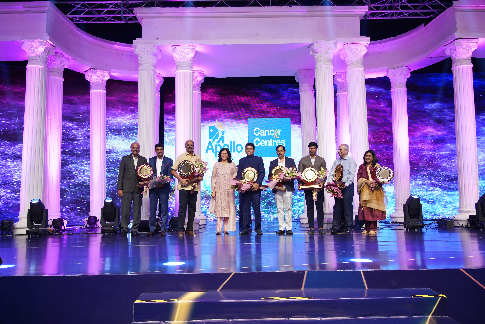
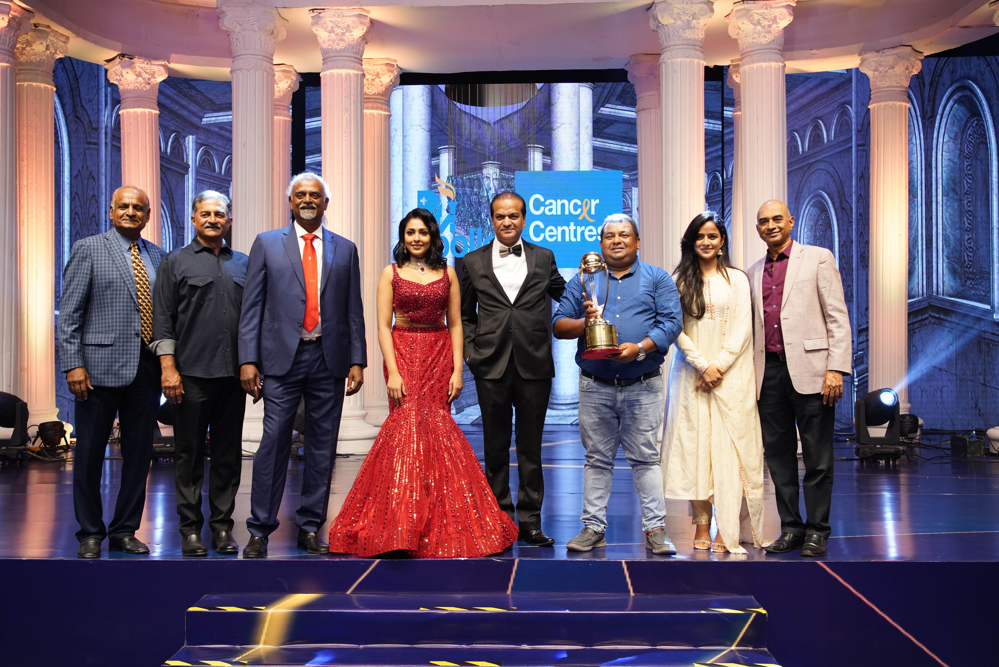
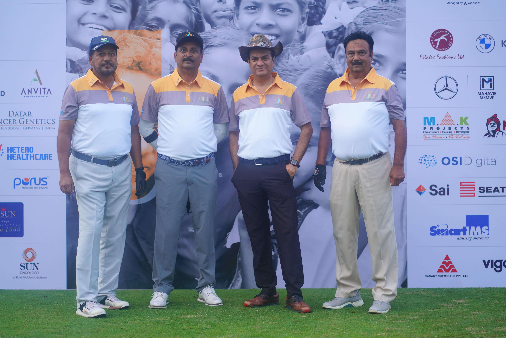

Game Format
Tee off shotgun start
Game Play
Session 1: Friday, 30th January 2026 (Morning Session)
Reporting Time - 6:15 am
Tee off - 6:45 am
Session 2: Friday, 30th January 2026 (Afternoon Session)
Reporting Time - 12 noon
Tee off - 12:30 pm
Session 3: Saturday, 31st January 2026 (Morning Session)
Reporting Time - 6:15 am
Tee off - 6:45 am
Session 4: Saturday, 31st January 2026 (Afternoon Session)
Reporting Time - 12 noon
Tee off - 12:30 pm
Session 5: Sunday, 1st February 2026 (Morning Session)
Reporting Time - 6:15 am
Tee off - 6:45 am
Game format:
Stableford; Tee off shotgun start
Prizes
Net Runner – HC 1 – 12
Net Winner – HC 13 – 18
Net Winner – HC 13 – 18
Net Winner – HC 19 & above
Net Winner – HC 19 & above
Gross Winner
Ladies – Winner
Theme
Together Against Cancer
A theme based World Cancer Day Celebrations & Prize Distribution
Let's Appreciate & Celebrate!
7:00 P.M Sunday, 1st February 2026
Boulder Hills Lawns,
Boulder Hills Golf & Country Club
PAST EVENTS
CCGC 2023
The 8th Biennial Cybercity Cancer Crusaders Golf Championship, organized by CURE Foundation and Apollo Cancer Centres, was held on November 25th & 26th, 2023 at the Hyderabad Golf Club, Golconda. The tournament, which combined sport with a social cause, aimed at raising funds and spreading awareness about cancer prevention, treatment, and rehabilitation for underprivileged patients.
The championship was launched earlier by Tollywood actress Krithi Shetty along with Dr. P Vijay Anand Reddy, Founder of CURE Foundation and Director, Apollo Cancer Hospital, Hyderabad. The event saw the participation of over 300 golfers across three sessions in the Stableford format with 100% handicap.
At the valedictory event, prizes were distributed by dignitaries including Dr. Vijay Anand Reddy, Sri C V Anand (IPS, Former CP Hyderabad), actresses Madhushalini & Vaishnavi Chaitanya, and Hyderabad Golf Association leaders.
Since its inception in 2010, the tournament has supported thousands of cancer patients, especially children, providing free or subsidized treatment and creating widespread awareness. Dr. Vijay Anand Reddy emphasized that 85–90% of childhood cancers are curable, and such initiatives play a vital role in ensuring access to care for the underprivileged.
As part of the celebrations, a special International Men’s Day event, ‘ANANTH’, was hosted at Novotel HICC on November 26th. Themed “Thank you for MANaging it all”, it paid tribute to men for their contributions to family and society. Prominent achievers such as Sri K I Varaprasad Reddy, Sri R Subhash Reddy, Dr. Nageshwar Reddy, Sri Prasad G V Reddy, and others were felicitated by Dr. Sangita Reddy, Jt. Managing Director, Apollo Hospitals Group.
Overall, the championship successfully blended sport, social awareness, and celebration of community spirit, while reinforcing the mission of CURE Foundation and Apollo Cancer Centres — to cure more cancers and extend compassionate care to those in need.





These eminent women personalities also walked the ramp with the Cancer Survivors is support to the cause. Icing on the cake was the Golfers and Models participating in the Ramp Walk. Filling between the sequences was a surprise with Ms. Sangita Bhattacharya. She has mesmerised the audience with her songs and moves. Apart from the entertainment, and the prize distribution, several new board members were inducted which shows the growing support for CURE Foundation. The entire event was attended by over 1100 guests with families and was very well received and appreciated and media coverage was exceptional.
CCGC 2022
The 7th edition of the Cancer Crusaders Golf Championship kicked off in style by the beautiful Actress Ms Rakul Preet Singh with a press conference held at HGA on 23rd March 2022.
The tournament only keeps growing every year, and this year we have reached new heights with around 350 Registrations and golf players all over the Country making it the largest charity golf tournament in the country.The golf tournament was held in three sessions spread over two days i.e. morning and evening sessions on 5th March 2022 and a morning session on 6th March 2022 at the Hyderabad Golf Club, Golconda. There were 110 participants in each session which effects the magnitude of support to the cause.
On the evening of Cancer Crusaders Golf Championship Prize distribution, March 6th was marked for a celebration! International Women’s Day! And a celebration it was, with a themed based event called “MYRA” – a Gift of God”. The stage was set with a backdrop of a beautiful palace for an exceptionally choreographed scintillating fashion show showcased by Ms. Neeta Lulla’s creations. The theme of the show beautifully portrayed, an enacted dance performance depicting suppression of women in the past, to a spirited woman fighting for her place in society. The next sequence was a testament to the power of womanhood where they are free to conquer the world. These “women of substance” from different walks of life who personify the power and resilience of womanhood were handpicked: DK Aruna, Ex. Minister; Dr Kola Shashikala, Senior Gynecologist; Dr Shashikala Reddy, Principal OMC; Shikha Goel, IPS; Lakshmi Gopichand, Sports; Padmaja Reddy, Padma Shri awardee; Deepa Reddy, Dodla Dairy; Lata Reddy, Ex-President, FICICI; Sunitha Reddy, 360 Gym; Anu Raj Singh, Sports; Preeti Reddy, Vice Chairman, Mallareddy University; Shraddha Reddy, Interior Designer; Pragya Jaiswal, Actress; Madhu Shalini, Actress; Priyanka Jawalkar, Actress.
These eminent women personalities also walked the ramp with the Cancer Survivors is support to the cause. Icing on the cake was the Golfers and Models participating in the Ramp Walk. Filling between the sequences was a surprise with Ms. Sangita Bhattacharya. She has mesmerised the audience with her songs and moves. Apart from the entertainment, and the prize distribution, several new board members were inducted which shows the growing support for CURE Foundation. The entire event was attended by over 1100 guests with families and was very well received and appreciated and media coverage was exceptional.
CCIC 2020
The ‘Cancer Crusaders Invitation Cup - 2020’ - an overwhelming success with over 250 golfers participating, concluded today with a colourful and themed ‘Walk of Life’ at Novotel Gardens, Hitech city. The Golf tournament was organized as a fund raiser and cancer awareness initiative by CURE Foundation and Apollo Cancer Hospital, at Hyderabad Golf Club on February 1 st & 2 nd , 2020.
The Walk of Life had child cancer survivors, celebs, models and ace golfers joining on the ramp for a colorful ramp walk, to celebrate conquering of cancer. Tollywood heartthrob Ms Rashi Khanna; Mr Jayesh Ranjan, IAS, Principal Secretary, I & C & IT; Mr Pullela Gopichand, Chief National Coach, Indian Badminton team; Mrs Shilpa Reddy, Fashion Designer & Mrs India; Dr Shashikala Reddy, Principal, OMC; Ms Divya Reddy, Designer; Mr Suresh Reddy, Chairman, Pride Jagaur Land Rover; Mr S Prabhakar Reddy, Managing Director, SLN Terminus Hotels & Resorts Pvt., & Dr Vijay Anand Reddy, Founder, Cure Foundation & Director, Apollo Cancer Institute; were amongst those who participated in the glittering fashion show. The Cancer Crusaders Golf Tournament Awards were presented on the occasion.
Actress Rakul Preet Singh was the chief guest of the play off and being a golfer herself, though she could not participate in the competition, she lent a helping hand to all the established ladies on the dais namely Lakshmi Manchu (Actress), Madhu Shalini (Actress), Shilpa Reddy (Former Mrs. India and fashion designer), Sangita Reddy (Executive Director, Apollo Hospitals), Swati Lakra (IPS), Shashikala Reddy (Doctor), Christina Z Chongthu (IAS), Sapthala Reddy (Entrepreneur), Anupama Sachdeva (Fashion designer and stylist).
CCIC 2018
Cancer Crusaders Invitation Golf Cup, for it's 5th edition surpassed all records by hosting a whopping 315 players. Further, for the first time, everyone enjoyed a parallel Mixed Reality Golf Championship which was more fun with fewer rules and more pun & high technology! Our host venue for three editions now - the beautiful Hyderabad Golf Club ensured the delight expected by our special invited guests was delivered without a hitch. Actress Kaajal Agarwal was the chief guest for the Pre-tournament press meet and inaugurated the tournament while taking a shot at the sport herself.
Needless to say, the most anticipated event after the competitive game-play was the Celebrity Golf Playoff along with the awards ceremony hosted by our trusted and consistent contributor Novotel HICC. Audience were enthralled when the celebrity players were asked to drive the ball into a net between marked pillars - ensuing into a competitive and greatly entertaining session. Ms. Sania Mirza, Ace Tennis Player; Ms. Ananda Shankar Jayant, Classical Dancer; Smt. Shikha Goel, IPS, DIG, CISF; Ms. Amrapali Kata, IAS; Dr. P. Shashikala Reddy, Professor of Micro for Telangana State; Ms. Saptala Reddy, M.D., Cybercity Builders & Developers; Ms. Vanaja Banagiri, Former Editor Hyderabad Times; Ms. Shilpa Reddy, Designer; Ms. Shalini Vadnikatti, Model & Cine Actress; Ms. Ritika Singh, Actress; Ms. Hebah Patel; Actress; Mr. Konda Vishweshwar Reddy, M.P. were the participants for the night game in HICC along with some dancing, cocktails and sumptuous dinner. One thing on everyone's mind was the arduous two year wait for the 10 year Anniversary Edition coming up in 2020!
CCIC 2016
The 4th edition of the Cancer Crusaders Invitation Golf Cup was held at the resplendent Hyderabad Golf Club! Actress Tamannaah Bhatia was the chief guest for the Pre-tournament press meet and inaugurated the tournament while taking a shot at the sport herself.
The two day tournament witnessed the participation of about 210 passionate golfers from all over the country. The most awaited moment of the series was the Celebrity Golf Play Off and prize distribution ceremony held at the exquisite Novotel HICC.
Actress Rakul Preet Singh was the chief guest of the play off and being a golfer herself, though she could not participate in the competition, she lent a helping hand to all the established ladies on the dais namely Lakshmi Manchu (Actress), Madhu Shalini (Actress), Shilpa Reddy (Former Mrs. India and fashion designer), Sangita Reddy (Executive Director, Apollo Hospitals), Swati Lakra (IPS), Shashikala Reddy (Doctor), Christina Z Chongthu (IAS), Sapthala Reddy (Entrepreneur), Anupama Sachdeva (Fashion designer and stylist).
CCIC 2014
Cancer Crusaders Invitation Cup 2014, held at the beautiful Hyderabad Golf Club overlooking Golconda Fort, participated by 210 golfers. The players competed over the course of two days being scored by the Stableford system.
The golf tournament was inaugurated by the internationally acclaimed tennis players Sania Mirza and Bethanie Mattek-Sands.
The tournament was followed by a Celebrity Playoff cocktail dinner at Novotel Convention Centre. The famous couple Mr and Mrs Akkineni and Amala Nagarjuna showed their support to the Cancer Crusaders cause by participating in the Celebrity Playoff together with such celebrities and opinion leaders like actors Ms Samantha and Ms Madhu Shalini, fashion designer Ms Asmita Marwa, the captain of Indian Women's Cricket team Ms Mithali Raj, fitness trainer Ms Dinaz Vervatwala, the executive director of Apollo Life Ms Upasana Kamineni and Dr. P. Shashikala Reddy.
CCIC 2012
Putting the cause for raising cancer awareness above all, 162 golfers participated in the Cancer Crusaders Invitation Cup-2012 at the EMAAR MGF Boulder Hills Golf Club on March 3rd and 4th. Five clubs from Hyderabad and six players from Delhi and Bangalore have participated at the fundraiser for CURE Foundation.
The celebrity Akkineni Nagarjuna was hosted at the event which was organized for the purpose of raising awareness regarding cancer.
The foundation by then had worked with 500 underprivileged children to provide them with cancer treatment and rehabilitation.
CCIC 2010
The first edition of CCIC was launched with Bharath Ratna award winner and ace cricketer Kapil Dev as the brand ambassador. The highlight of the unique fundraiser was 'The Celebrity Golf Playoff" that took place at the 18th hole where 150 golfers participated. 'The celebrity golf playoff' itself was a custom-designed format that lasted about one hour, and was designed to entertain and give celebrities an opportunity to take a shot at the game.
Dr Vijay Anand, universally one of the top oncologists and founder of Cure Foundation said, "Through this event, we intend to raise money and spread cancer awareness in the society. Our objective is to create a consistent, annual, respectable charity golf tournament that will be well known in the golfer community."
It was a fun and fulfilling day of social service.